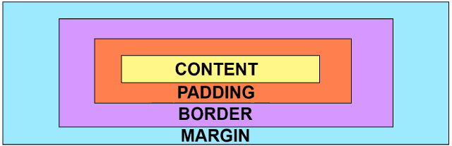
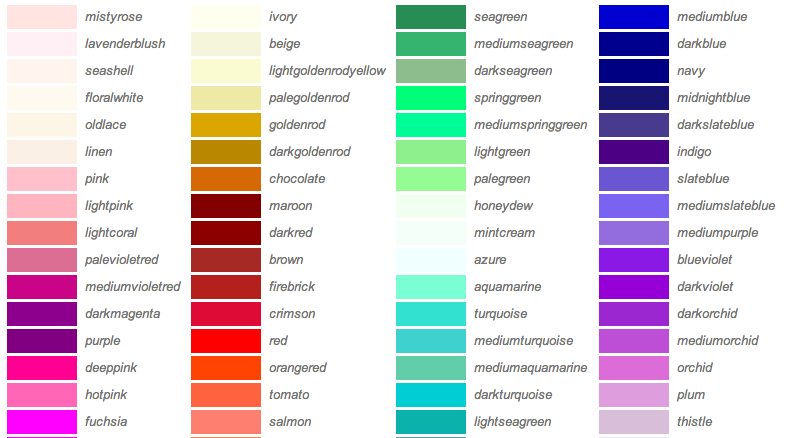

Задаёт внешние отступы блока — отступы от внешней границы элемента до границ родительского элемента или до соседних элементов
Это свойство, которое задаёт внутренние отступы блока — отступы от внешней границы блока до его содержимого
Это свойство, изменяющее цвет объекта
Это свойство, изменяющее размер шрифта
Это свойство, изменяющее стиль шрифта
Это свойство, добовлющее тень объекту